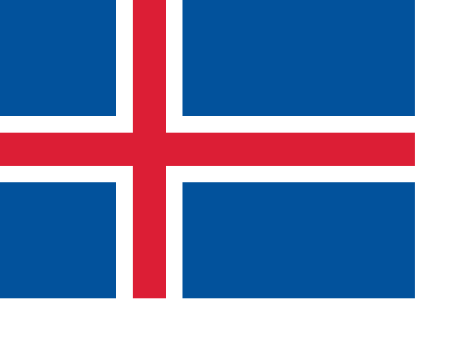

Islanti
Maantieteestä
Islanti sijaitsee Euraasian ja Pohjois-Amerikan mannerlaattojen välisellä saumalla. Tämän vuoksi Islannissa on suuri määrä tulivuoria, ja siellä tapahtuu myös paljon maanjäristyksiä.
Islannissa on paljon jokia, vesiputouksia ja sijaintinsa ansiosta myös paljon kuumia lähteitä, joilla tuotetaan geotermistä energiaa. Islannin suurin suihkuttava kuuma lähde on Geysir, joka on antanut nimensä moneen kieleen tarkoittaen suihkuttavaa kuumaa lähdettä. Islannissa on myös paljon jäätiköitä, ja noin 11,5 prosenttia maan pinta-alasta onkin jään peitossa. Euroopan suurin jäätikkö on Etelä-Islannissa sijaitseva Vatnajökull.
Korkeimmat vuoret ovat yli 2 000 metriä korkeita, ja maan korkein kohta on Vatnajökullin jäätiköllä sijaitseva Hvannadalshnúkur (2 110 m). Maan rannikko on melkein joka puolelta muodostunut monista vuonoista ja poukamista. Monin paikoin kallioseinämät kohoavat jyrkkinä suoraan merestä. Toisaalla taas kilometrien pituiset hietikot eli somerikot tai kivikot reunustavat merenrantaa. Rantaviivaa on kaiken kaikkiaan 4 970 kilometriä.
Muuta tietoa
| Valtiomuoto: Tasavalta |
| Pinta-ala: 103 000 km2 |
| Väkiluku: 350 710 |
| BKT: 13,04 miljardia USD |
| Virallinen kieli: islanti |
Suurimmat kaupungit:
|
| Lippu:  |